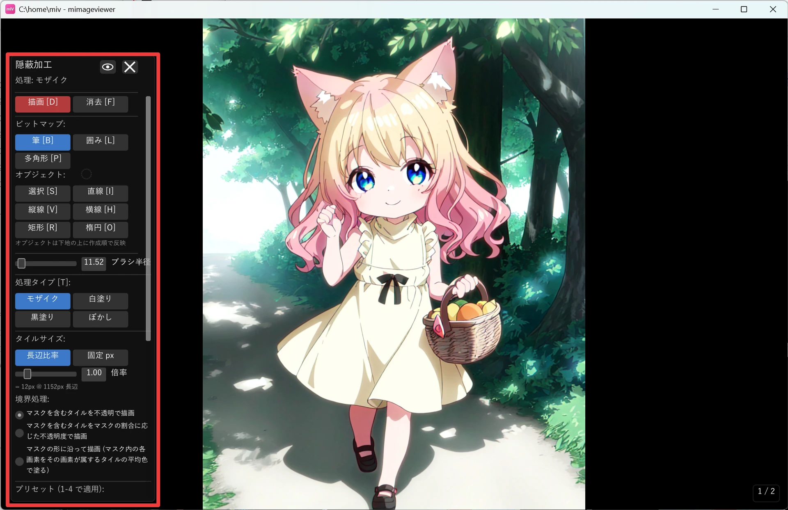
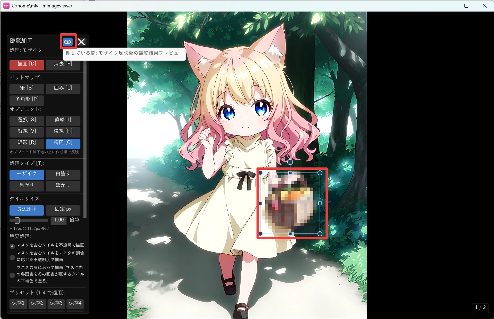
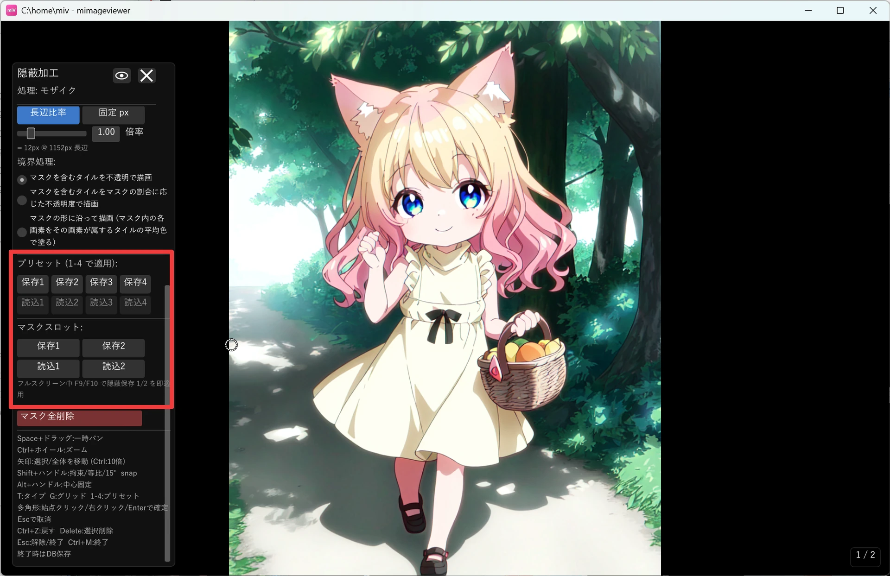

モザイク・白塗りで隠蔽加工
画像の一部をモザイクや塗りつぶしで隠したいときの機能です。元画像は書き換えず、 表示のたびにマスクと設定を重ねて合成するので、範囲や強さを何度でも調整し直せます。
モードに入る
- フルスクリーンで画像を開き、画像補正パネルの隠蔽加工アイコンを押します（Ctrl+M でも開始できます）
- 左パネルに加工タイプとツールの一覧が表示されます
- 隠したい範囲をツールで指定します
- Ctrl+M または Esc でモードを終了します

加工タイプを選ぶ
左パネルの加工タイプボタンから選べます（T キーでも順に切り替えられます）。それぞれ処理内容が異なります。
| タイプ | 処理内容 |
|---|---|
| モザイク | 指定範囲をタイル状に平均化します。タイルサイズは固定ピクセルまたは画像長辺比率で指定できます |
| 白塗り | 指定範囲を白で塗ります。不透明度と境界のなじませ方を調整できます |
| 黒塗り | 指定範囲を黒で塗ります。不透明度と境界のなじませ方を調整できます |
| ぼかし | 指定範囲にぼかしをかけます。半径や範囲外の色の拾い方を調整できます |

範囲を指定するツール
筆・囲み・多角形は共通のマスクへ直接描きます。直線・縦線・横線・矩形・楕円は 後から調整できる形として残り、共通のマスクの上に作成順で重なります。
| ツール | ショートカット | 特徴 |
|---|---|---|
| 選択 | S | オブジェクトを選択・移動・サイズ変更・回転します |
| 筆 | B | 自由に共通のマスクへ描きます |
| 囲み | L | 自由に囲んだ範囲を共通のマスクへ描きます |
| 多角形 | P | 頂点を順にクリックして範囲を作ります。右クリックまたは Enter で確定し、Esc で取り消します |
| 直線 | I | 太い直線オブジェクトを作成します。中点の菱形ハンドルで太さを変えられます |
| 縦線 | V | 画像の上下をまたぐ縦方向のオブジェクトを作成します |
| 横線 | H | 画像の左右をまたぐ横方向のオブジェクトを作成します |
| 矩形 | R | 矩形オブジェクトを作成します |
| 楕円 | O | 楕円オブジェクトを作成します |
D で描画、F で消去に切り替えます。描画はマスクを足し、消去はマスクを削ります。 消去モードで作ったオブジェクトも、既存のオブジェクトを削除するのではなく上から削る形として残るので、 あとから細かく調整し直せます。
プリセットとマスクスロットで手早く使う
加工タイプ・タイルサイズ・不透明度・ぼかし半径などの設定は 4 つまでプリセットに保存でき、 1〜4 で呼び出せます。マスク自体も保存 1 / 保存 2 のスロットに一時保存でき、 別ページへ読み込めます（読み込みは現在のマスクを置き換えます）。フルスクリーン表示中は F9 / F10 で隠蔽スロット 1 / 2 を即適用でき、Shift+F9 / Shift+F10 で現在ページの隠蔽マスクを削除できます。

書き出す
隠蔽加工のマスクは自動保存され、同じ画像を開くと再び適用されます。加工済みの見た目を別ファイルとして 残したい場合は、モードを閉じてから画像補正パネル（画面左端にマウスを寄せると表示）の ヘッダー右側にあるエクスポートアイコンで書き出します（Ctrl+E でも実行できます）。 現在の設定だけでなく、プリセット 1〜4 の見た目をまとめて書き出すこともできます。
← チュートリアル一覧へ戻る